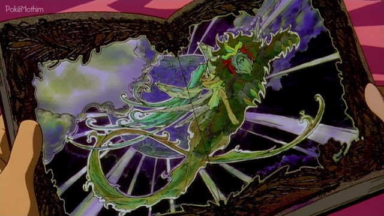

🟡 Nome Japonês: Pocket Monsters the Movie: Lord of the Unknown Tower, Entei
🟡 Nome Americano: Pokémon 3: The Movie - Spell of the Unown: Entei
🟡 Nome Brasileiro: Pokémon 3: O Feitiço dos Unown
Data de lançamento:
🎞 Japão: 08 de julho de 2000
🎞 Estados Unidos: 06 de abril de 2001
🎞 Brasil: 06 de julho de 2001
O filme começa com um pesquisador chamado Spencer falando com sua filha, Molly, sobre seu trabalho, explicando que ele tem procurado se aprofundar e desvendar os mistérios envolvendo Unown, um Pokémon misterioso que possui 28 formas diferentes e que pouco se sabe sobre ele. Spencer usa um livro para mostrar a Molly os Pokémon que tem procurado e é quando, em outra página, ela visualiza Entei e fala que ele é seu Pokémon favorito. Rapidamente, os dois brincam com Molly em suas costas e ele fingindo ser Entei.

Após receber a ligação de um amigo que está trabalhando com ele
sobre uma pista do que vem pesquisando, Spencer sai e vai para uma
espécie de câmara que contém vários símbolos e objetos misteriosos.
Enquanto investiga o local, vários Unown começam a aparecer, até que
em certo momento Spencer é levado para um local como se estivesse
caindo em um mundo com vários Unown e suas formas.
Após
Spencer desaparecer misteriosamente, seus amigos vão até sua casa
para contar a Molly sobre o ocorrido e a menina, que se mostra feliz
achando que seu pai está de volta, acaba se decepcionando com a
ausência dele. Em outro cômodo da mansão, Molly se depara com uma
caixa que contém vários símbolos que seu pai havia visto antes de
ser levado para o mundo misterioso de Unown.
Enquanto
mexe nos objetos e símbolos, Molly consegue, com as letras presentes
na caixa de seu pai, formar palavras como: "PAPAI, MAMÃE, EU" e após
derramar uma lágrima, os Unown voltam a aparecer - fazendo com que
haja uma espécie de transformação com cristais no local onde Molly
se encontra. Ao assistir o local se transformar, Molly se depara com
a presença de seu Pokémon favorito: Entei. Ele se comunica a menina
e ela rapidamente o abraça, achando ser seu pai.
Após essa sequência de Molly, em outro cenário, Ash e seus amigos
(Misty e Brock) aparecem tentando chegar a um Centro Pokémon mais
próximo, até que uma jovem treinadora chamada Lisa aparece e o
desafia para uma batalha completa. Ash escolhe Totodile, Chikorita,
Noctowl, Pikachu, Bulbasaur e Cyndaquil enquanto ela escolhe
Granbull, Girafarig, Mankey, Aipom, Butterfree e Quagsire.
Após
a batalha, Ash, seus amigos e Lisa almoçam por ali mesmo e, após ser
questionada se existe algum centro Pokémon pelas redondezas, Lisa
informa que o mais próximo fica em Greenfield - uma cidade que
possui uma lindo campo florido que leva Misty a rapidamente se
animar, pois se lembra que é um dos lugares que ela gostaria de
conhecer. Então, todos vão até Greenfield e se deparam com uma torre
de cristais - criadas pelo feitiço dos Unown - e vão até lá.
Ash e os outros então procuram pelo Centro Pokémon da
cidade para verificar como estão as coisas logo após presenciar as
grandes colunas de cristais que tomaram a cidade.
Enquanto isso, a mãe de Ash, Delia, que vê as notícias pela TV, se
mostra preocupada com Spencer e sua filha. O Professor Carvalho e
Tracey também observam do laboratório o noticiário em que o
Professor revela que Spencer, que foi um de seus melhores alunos,
enviou para ele uma parte de sua pesquisa acerca dos Unown. Logo em
seguida, Delia chega, revelando assim ter sido uma grande amiga de
Spencer, e decide ir até Greenfield com o Professor Carvalho para
averiguar o ocorrido.
Ao chegar no Centro Pokémon de Greenfield, Ash reencontra sua mãe e
o Professor Carvalho. Ao ver a cena pela TV e ver as fotos presentes
na sua casa, Molly também deseja ver sua mãe e seu pedido é
concedido por Entei imediatamente, que diz: "Se é o que deseja...".
Entei sai da torre para cumprir o pedido de Molly e vai até o Centro
Pokémon em busca da mãe de Ash.
Ao chegar no Centro
Pokémon, Entei avista rapidamente o que procura e, em seguida,
hipnotiza Delia e a leva até Molly na mansão. Molly, achando que
Delia é sua mãe, expressa um outro desejo que é de ficar com "seus
pais" para sempre, fazendo com o que feitiço de Unown crie cristais
ainda mais intensos.
No Centro Pokémon, o Professor Carvalho informa a todos que o
Pokémon que levou Delia se trata do lendário Entei e que a sua
aparição tem a ver com os Unown que foram vistos anteriormente na
mansão com Spencer. Na cidade, onde tudo está cristalizado,
trabalhadores tentam destruir os cristais da mansão com uma
escavadeira, mas são impedidos pelo poderoso ataque de Unown, que os
lança para longe. Molly, ao perceber o que está acontecendo, envia
uma mensagem para o Professor Carvalho pedindo para que deixem "sua
família" em paz.
Preocupado com sua mãe e querendo salvá-la, Ash vai em direção à
mansão junto com Brock e Misty. Jessie, James e Meowth, que como
sempre seguem Ash e seus amigos, estão dispostos a se aproveitar da
situação para prosseguir com seus planos, mas são impedidos por
Entei com um ataque forte, lançando-os para longe.
Após serem lançados para longe devido ao ataque de Entei, a Equipe
Rocket acaba caindo dentro da mansão e veem ali uma oportunidade
para seguir com seu objetivo.
Enquanto isso, uma equipe de repórteres filmam um Noctowl voando
sobre uma espécie de cachoeira no final de um rio e logo é
constatado que se trata de Ash e seus amigos. Ash envia seu Noctowl
para carregar Chikorita e Bulbasaur com o intuito de usar o ataque
Chicote de Vinha de cima da cachoeira para fazer com que ele e seus
amigos subam até um local onde se encontra uma entrada para a
mansão.
Com tudo sendo transmitido pela TV, Delia logo reconhece Ash e sai
do transe no mesmo instante. No entanto, ao perceber que Entei faz
tudo que Molly quer, já que ela pensa se tratar de seu pai, ela
finge que nada aconteceu.
Momentos antes de Ash conseguir chegar no final do rio, Lisa deu o
seu Poké Gear para ele para que todos que estão no Centro Pokémon
possam se comunicar com mais facilidade. Ao chegar na entrada, o
Professor Carvalho liga para Ash informando mais dados sobre Unown.
Ele revela que Unown é capaz de ler os desejos de outros seres vivos
e pode realizá-los.
Ao chegar numa porta cristalizada,
Ash pede que seu Cyndaquil use o Lança-chamas, mas logo percebe que
o ataque não foi suficiente para destruir os cristais criados por
Unown. Então, Brock envia seu Vulpix para ajudar e, em seguida,
Totodile e Staryu de Misty usam o Jato de Água para conseguir
terminar de destruir os cristais da porta. Já dentro da mansão, Ash
e seus amigos correm pelas escadas, mas percebem que a realidade foi
alterada assim como o Professor Carvalho falou que poderia
acontecer. Eles continuam subindo as escadas até uma área florida
que é observada por Molly, que ao invés de permitir que Entei se
livre deles, permite que fiquem - pois gostaria de tentar uma
batalha com Ash e seus amigos.
Entei se oferece para ir
com Molly ao campo florido, já que ela não tem nenhum Pokémon. Molly
comenta, com um semblante triste, que não tem idade para participar
de uma batalha. Por isso, Entei, mais uma vez, concede o desejo dela
e a transforma em uma versão mais velha, com 18 anos.
Ao encontrar Ash e seus amigos no campo, Molly, em sua versão mais
velha, os desafia para uma batalha. Intrigados sobre quem é aquela
garota, Brock pergunta se ela é Molly e ela diz que sim, lembrando e
falando para os outros que tudo aquilo faz parte do sonho de Molly e
que Entei fará tudo que ela pedir.
Brock então se
oferece para batalhar de 3x3 contra ela enquanto Ash e Misty seguem
a procura de Delia. Entei cria um campo de batalha e surge na mão de
Molly uma Poké Bola de cristal. Durante a batalha, Brock envia seu
Zubat, Vulpix e Onix, enquanto Molly envia um Flaaffy, Teddiursa e
Phanpy. Molly facilmente consegue vencer os Pokémon de Brock,
revelando assim ter se tornando uma forte treinadora. Ela então
parte atrás de Ash e Misty.
Após a batalha, é mostrado um momento de interseção de Delia com a
garotinha, em que Delia encontra o livro que Spencer sempre lia para
Molly e fica mais claro que tudo aquilo faz parte do desejo da
menina de ter uma família.
No final das escadas, Ash e Misty são levados até uma praia deserta
e é ali que Molly e Entei chegam querendo mais uma batalha. Misty
pede para que Ash continue indo atrás de sua mãe pelas escadas que
estão ao fundo e se oferece para batalhar com Molly, revelando ser
uma Líder de Ginásio. Nesse momento, Molly fica confusa, pois ela
achava que apenas adultos poderiam ser líderes. Molly então se
transforma em uma versão sua mais nova, mas não sua forma original.
Molly revela que só vai utilizar Pokémon aquáticos, já
que Misty é uma especialista nesse tipo. A realidade mais uma vez é
invertida e uma onda as cobre fazendo com que ambas batalhem debaixo
d'água. Misty então usa seu Goldeen e seu Staryu e Molly chama
Kingdra e Mantine.
No meio da batalha, é mostrado que Ash consegue achar sua mãe. Delia
acorda Molly, que está sonhando, e diz para a menina que ela vai
embora porque é mãe do Ash, e não dela.
Molly fica triste
após ouvir que Delia não é sua mãe, o que acaba criando mais
cristais devido ao forte feitiço dos Unown. Molly começa a gritar e
é nesse momento que Entei aparece para batalhar, dizendo ser pai da
Molly e que vai protegê-la à todo custo.
Após revelar proteger Molly, Entei praticamente obriga Ash a querer
batalhar, já que devido a chateação da menina, os cristais de Unown
acabam o separando de sua mãe. Ash chama seus Pokémon para batalha,
mas Totodile e Cyndaquil não conseguem vencer Entei. Ash contraria
Entei, que fica furioso e lança contra ele uma rajada púrpura que é
impedida por Pikachu com seu Choque do Trovão. Pikachu continua
batalhando contra ele e, quando Entei vai lançar mais uma vez o seu
poderoso ataque, Ash pula na frente e impede que o ataque acerte,
lançando o garoto e seu Pokémon para longe. É nesse momento que o
Charizard de Ash aparece para salvá-lo.
Charizard entra na batalha contra Entei e lança uma investida
tentando parar o Pokémon. Ash ordena que Charizard use Lança-chamas
para impedir Entei. Ainda durante a batalha, os amigos de Ash e sua
mãe tentam convencer Molly a pedir que Entei pare, mas a menina se
recusa, fazendo com que Entei continue lançando fortes ataques. Em
um momento, Entei sai da torre e corre em direção ao topo, onde é
auxiliado por mais cristais de Unown.
Ash o segue na tentativa de pedir para que ele pare, mas
nada acontece. Charizard cai dentro da torre e é imobilizado por
Entei, que pisa em seu pescoço. É justamente nesse momento que Molly
ordena que Entei pare, pois ela não quer que ele acabe com os
Pokémon de Ash.
Após o pedido de Molly, Entei larga Charizard e Brock e Misty dizem
para ela que toda boa treinadora sabe a hora de parar. Molly
concorda e percebe que tudo aquilo não podia estar acontecendo,
voltando para sua realidade. Nesse momento, os cristais criados por
Unown recuam, assim como Entei, pois ele percebe que não há a
necessidade de existir sem Molly.
Após tudo parecer estar resolvido, Ash liga para o
Professor Carvalho, que revela que os Unown não conseguem mais
controlar o seu poder, fazendo com que novos cristais sejam criados
de forma descontrolada. Ao chegarem na entrada da mansão, Ash e os
demais encontram os Unown bloqueando a saída. Os Unown criam uma
espécie de barreira para que todos não saiam e, apesar de Molly
estar querendo voltar para a sua realidade, os Unown perdem
totalmente seu controle de poderes Psíquicos.
Entei
surge rugindo e abre caminho com seus ataques, se posicionando à
frente do grupo de Ash. Entei, assim como Ash, pede que Molly
acredite nele, pois a última coisa que ele irá fazer antes de ir
embora é tirá-la dali. Entei usa seus ataques para impedir a
barreira dos Unown, mas não obtém sucesso. Então, ele ganha a ajuda
dos Pokémon de Ash. Após conseguir atacar os Unown diretamente,
Entei consegue fazer com que eles vão embora liberando a passagem
para todos. Nesse momento, Entei se despede de Molly, pois assim com
os Unown, ele também terá que ir embora. Contudo, antes ele revela
que sempre a seguirá nos seus sonhos.
Após a barreira ser destruída e os Unown irem embora, alguns deles
caem e se transformam naqueles objetos que Molly encontrou dentro da
caixa de seu pai. Assim, os cristais somem, a dimensão volta para
seu estado normal e o pai de Molly é liberado pelos Unown.
Os campos de Greenfield voltam a aparecer e todos saem da mansão.
Nesse momento, Molly vê uma nuvem com o formato de um Entei e então
o agradece. O professor Carvalho aparece com os demais que estavam
no Centro Pokémon, a Equipe Rocket se despede e Spencer retorna para
Greenfield com um reencontro emocionante com Molly, que brinca com o
Teddiursa que usou na batalha contra Brock.
Durante os
créditos, Ash se despede de seu Charizard, que volta para seu
treinamento, e os demais voltam para Pallet. Ash, Misty e Brock se
despedem de Lisa, que volta para a sua jornada por Johto, assim como
eles.
🟡 Esse foi o último filme exibido nos cinemas com o roteiro escrito por Takeshi Shudō;
🟡 O primeiro esboço para esse filme tinha um enredo totalmente diferente, envolvendo a descoberta de um fóssil de dinossauro que voltaria à vida e que iria trazer destruição a Kanto. O rascunho foi rejeitado pelos produtores por se tratar de uma trama muito arriscada para um filme de Pokémon;
🟡 Um trailer japonês inicial conta com a breve aparição de Mewtwo na entrada de uma caverna, observando uma tempestade. Isso pode ser um indicativo de que Mewtwo iria aparecer em algum ponto no filme;
🟡 Esse é o único filme que não inclui um Pokémon com distribuição exclusiva por evento ou um Pokémon novo na trama;
🟡 Se considerarmos que os Unown não são Pokémon lendários (como ocorre nos jogos), esse é o único filme que não inclui um Pokémon lendário real na trama, já que o Entei que aparece no filme é uma ilusão criada pelos Unown;
🟡 Alguns dos esboços de Unown que aparecem no computador do Professor Carvalho não apareceram em nenhuma outra mídia da franquia. É provável que eles não existam no mundo Pokémon, e sim somente na dimensão dos Unown;
🟡 A barra de tarefas do computador do Professor Carvalho possui os símbolos das Energias do TCG.
🟡 Esse filme e o respectivo curta constituíram a primeira aparição do Totodile e do Noctowl do Ash para o público americano, já que os episódios em que ocorrem as respectivas capturas foram ao ar após o lançamento do filme;
🟡 A identidade da mulher que acompanha Spencer Hale no final do filme não é revelada, mas segundo o roteiro essa mulher é a mãe de Molly;
🟡 O primeiro trailer desse filme se refere ao longa-metragem como "Lord of the Unknown Tower", o que se corresponde a uma tradução do título japonês;
🟡 No original japonês, esse é o último filme em que Jessie e James terminam dizendo a frase "いい かんじ!" (literalmente, "sensação boa"), ao invés da habitual "や な かんじ！"(o que corresponderia ao "decolando de novo"). Na versão brasileira eles mantém o "decolando de novo".
🟡 Na versão brasileira, Misty afirma que é a líder do ginásio de Vermilion, ao invés de Cerulean;
🟡 O relatório de Spencer Hale contém diversos erros de gramática e ortografia, por ser uma tradução grosseira do japonês;
🟡 Em uma cena do filme, quando o Professor Carvalho fala com Ash através do PokéGear, suas sobrancelhas são cinza, sendo que elas são pretas;
🟡 Quando Entei, Pikachu e Charizard tentam quebrar a barreira, o interior da boca do Brock fica da mesma cor de sua pele.
🟡 No original japonês, a noiva de Spencer o deixou por causa da sua obsessão em descobrir os segredos do Unown. Já na versão americana foi dito que ela desapareceu misteriosamente enquanto ele estudava os Unown. Os diálogos em que os repórteres e Delia comentam que a mãe de Molly está desaparecida há dois anos foram adicionados à versão ocidental devido a essa diferença;
🟡 A dublagem adiciona uma voz quando Entei se apresenta a Molly pela primeira vez, enquanto que no original não há essa adição. De forma similar, a versão ocidental adiciona um filtro a voz de Entei para indicar que ele se comunica por telepatia, enquanto no original japonês não há essa distorção;
🟡 Quando Delia expõe sua ligação com Spencer, no original ela diz que ele a ajudava com seu dever de casa, enquanto na versão ocidental ela menciona que Spencer veio para Pallet para se tornar um grande professor Pokémon;
🟡 Na versão japonesa, na cena em que Liza e Charla assistem o noticiário, a repórter identifica Entei nominalmente, enquanto se refere a Delia como uma mulher desconhecida. No Ocidente isso se inverteu. De forma similar, no original a Equipe Rocket identifica o lendário quando ele aparece na TV, e na tradução isso não ocorre;
🟡 Na versão japonesa, a Equipe Rocket vai para a mansão dos Hale para conseguir algum tesouro, no Ocidente eles vão para a mansão por conta de Ash e seus amigos estarem indo para lá, e com isso deduzem que lá havia um Pokémon raro a ser roubado;
🟡 Na versão japonesa, ao batalhar contra Molly, Brock menciona que é um criador Pokémon e o quanto é importante a forma com que o Pokémon é treinado. Na versão americana ele faz vários trocadilhos em relação ao tipo que é especialista, e Molly sorri com a expressão "rock and roll", o que justificaria a escolha por Phanpy na batalha contra Onix. Na versão brasileira ele comenta que se quiser ganhar terá que "tirar leite de pedra";
🟡 Na versão oriental, Ash diz a Charizard para usar a Espiral de Fogo (Fire Spin) contra Entei, mas no Ocidente o ataque não é especificado;
🟡 Quando Entei decide lutar contra os Unown, Molly chama Entei pelo nome e não mais como seu pai, na versão ocidental. Na versão original ela ainda o chama de pai mesmo depois da batalha;
🟡 O diálogo que Entei tem com Molly antes de lutar contra os Unown, em que o lendário diz para que ela continue acreditando nele, foi adicionado na versão ocidental;
🟡 No Ocidente e no Oriente, os finais do filme foram diferentes. No Oriente, a cena de Spencer voltando do Mundo Unown foi exibida durante os créditos, mas no Ocidente, a cena foi exibida antes dos créditos, pois algumas pessoas têm o costume de ir embora do cinema nos créditos do filme, e colocando a cena antes dos créditos, ninguém iria pensar que o filme terminou com Molly órfã.